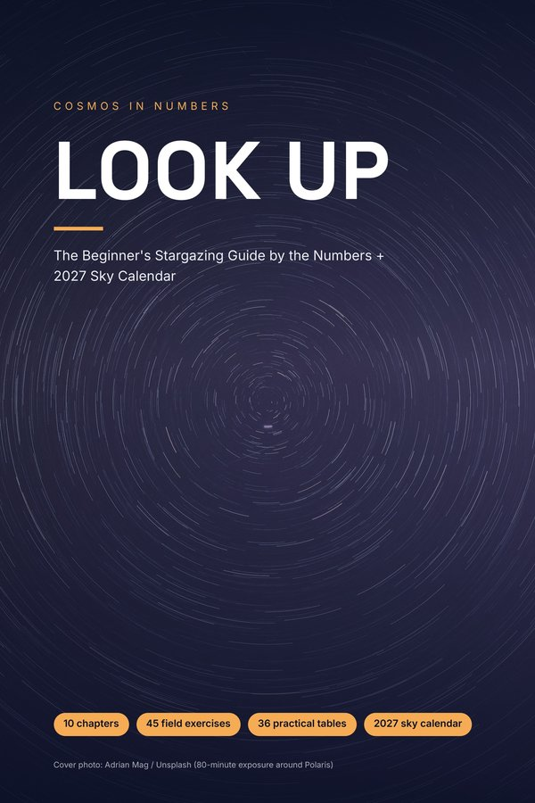

LOOK UP
You don't need a telescope. You need to know where to look.
Most people who say "I can't see anything up there" never learned where and how to look. This 173-page guide takes you from your first night out to finding another galaxy with binoculars, with every number linked to its source.
$14$7.41 with code COSMOS9
Launch price until 30 November 2026.
Get the full guide for $7.41 Read Chapter 1 free
PDF + EPUB · instant download · 14 bonus posters included
What you'll be able to do
- Find the planets, the brightest stars and the main constellations on any clear night
- Plan the best nights using the Moon phase, light pollution (Bortle scale) and the weather
- Catch the best meteor showers of 2027 when the Moon won't spoil them
- Watch the total solar eclipse of 2 August 2027 (up to 6 min 23 s of totality) safely
- Photograph the Moon and the stars with the phone you already have
- Choose your first binoculars without wasting money
What's inside
- 10 chapters: your first night, how the sky moves, the Moon, the planets, clusters and galaxies, meteors and satellites, your first gear, dark skies, phone astrophotography, the 2027 calendar
- More than 30 field exercises you do outside, each with time, kit, steps and the result you should expect
- 36 practical tables and diagrams you can use by red light
- A month-by-month 2027 sky calendar computed from NASA/JPL ephemeris data
- The 30-Night Challenge and a printable observing log
- Bonus: 14 print-ready data posters
Who it's for: curious beginners, parents who want a clear-sky activity with their kids, and anyone who has just bought (or is about to buy) binoculars or a first telescope. If you already run a 10-inch Dobsonian, this book is too basic for you.
FAQ
Do I need a telescope?No. Most of the book is naked eye; a chapter helps you choose binoculars if you want them.
I live in a city. Will it work?Yes. The Moon, the planets and the bright stars show through light pollution, and the book tells you what to expect at each level of the Bortle scale.
Southern Hemisphere?Yes. The book covers both hemispheres where the sky differs.
What format?PDF (6×9 in, selectable text) and EPUB, instant download. Read it on your phone outside.
Written with the help of AI tools and checked against the cited sources (NASA, JPL, IMO, peer-reviewed research). NASA and the other organisations cited do not endorse this book.